魚、カニ、ロブスターの種類が書かれた本（1, 2, 4）
魚、カニ、ロブスターの種類が書かれた本（1, 2, 4）
 lava lobster trap [ロブスター用耐熱罠]
lava lobster trap [ロブスター用耐熱罠]
junk proof hook [ゴミよけのつり針]
dredging hook [探索つり針]
lava proof hook [溶岩用つり針]
ランク1のエサ(下記7種類)
 yellow barracudaのエサ
yellow barracudaのエサ
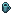 great barracudaのエサ
 autumn dragonfishのエサ
autumn dragonfishのエサ
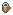 holy mackerelのエサ
 giant koiのエサ
giant koiのエサ
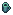 fairy salmonのエサ
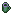 stone crabのエサ
エサの数量は報酬ポイントの1/2（端数切捨）
 power scroll 105[パワースクロール(釣り)105]
power scroll 105[パワースクロール(釣り)105]
エサの数量は報酬ポイントの1/2（端数切捨）
魚の種類が書かれた本（3）。
lava lobster trap [ロブスター用耐熱罠]
junk proof hook [ゴミよけのつり針]
dredging hook [探索つり針]
lava proof hook [溶岩用つり針]
ランク1のエサ
ランク2のエサ(下記9種類)
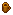 summer dragonfishのエサ
 fire fishのエサ
fire fishのエサ
 reaper fishのエサ
reaper fishのエサ
bull fishのエサ
unicorn fishのエサ
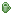 crystal fishのエサ
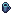 blue lobsterのエサ
 spider crabのエサ
spider crabのエサ
 lava fishのエサ
power scroll 105〜110[パワースクロール(釣り)105〜110]
lava fishのエサ
power scroll 105〜110[パワースクロール(釣り)105〜110]
エサの数量は報酬ポイントの1/2（端数切捨）
魚の種類が書かれた本（3, 5）。5は魔法の海洋生物編
lava lobster trap [ロブスター用耐熱罠]
junk proof hook [ゴミよけのつり針]
dredging hook [探索つり針]
lava proof hook [溶岩用つり針]
ランク3のエサ(下記9種類)
black marlinのエサ 100ch
 blue marlinのエサ 100ch
blue marlinのエサ 100ch
 spring dragonfishのエサ 100ch
spring dragonfishのエサ 100ch
 stone fishのエサ 100ch
stone fishのエサ 100ch
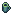 giant samuraiのエサ 100ch
 void crabのエサ 100ch
void crabのエサ 100ch
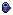 kingfishのエサ 100ch
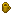 golden tunaのエサ 100ch
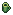 zombie fishのエサ 100ch
power scroll 105〜120[パワースクロール(釣り)105〜120]
charybdis bait 5ch[カリュブディスのエサ]
魚の種類が書かれた本（6）。伝説の海洋生物編
lava lobster trap [ロブスター用耐熱罠]
junk proof hook [ゴミよけのつり針]
dredging hook [探索つり針]
lava proof hook [溶岩用つり針]
ランク1〜3のエサ 100ch
ランク4のエサ(下記10種類)
 abyssal dragonfishのエサ 100ch
abyssal dragonfishのエサ 100ch
void lobsterのエサ 100ch
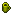 lantern fishのエサ 100ch
winter dragonfishのエサ 100ch
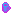 rainbow fishのエサ 100ch
dungeon pikeのエサ 100ch
seeker fishのエサ 100ch
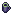 tunnel crabのエサ 100ch
blood lobsterのエサ 100ch
dread lobsterのエサ 100ch
power scroll 105〜120[パワースクロール(釣り)105〜120]
oracle of the sea [海のオラクル]